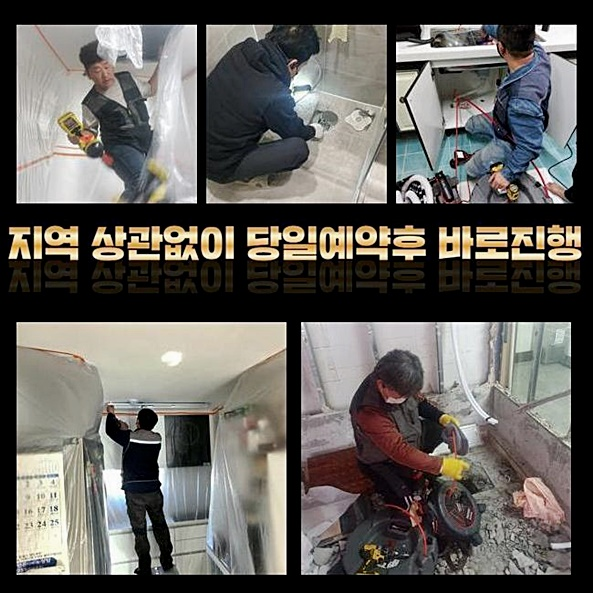
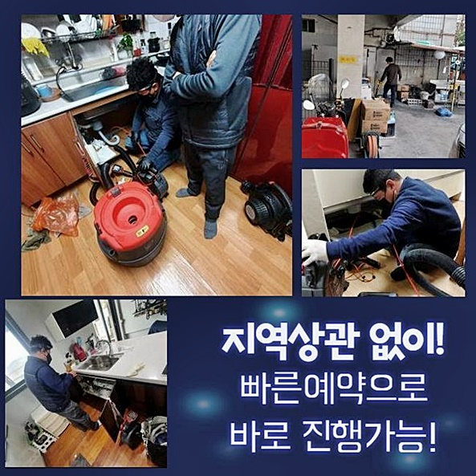
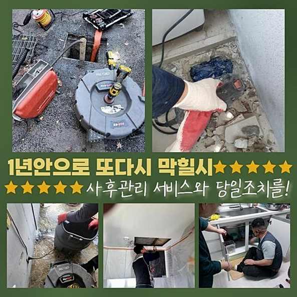
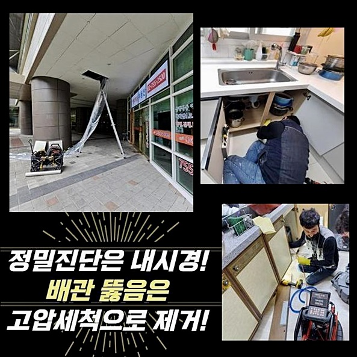
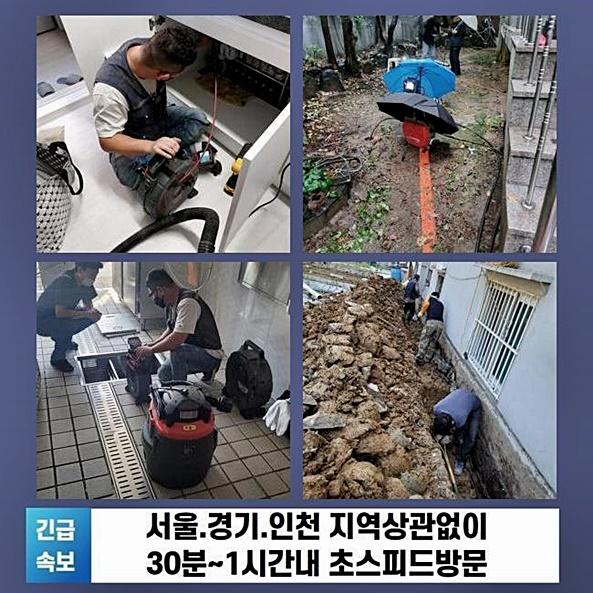
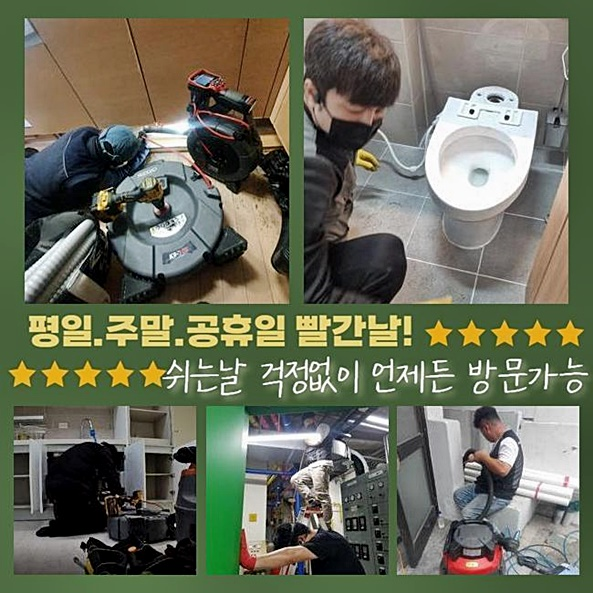
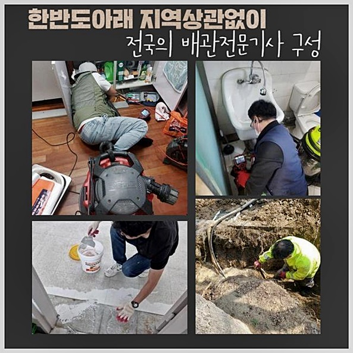

🏠 성북구 하월곡동화장실하수구뚫음 안암동 배수로뚫기 배관막힘누수업체
용인 싱크대막힘 전문 시공 후기

📋 작업 개요
- 위치: 용인
- 서비스 유형: 싱크대막힘, 변기막힘, 하수구막힘, 배관막힘, 누수수리, 역류해결, 뚫는업체, 배관청소
- 작업 일시: 2024. 9. 20. 23:48
- 업체명: 하수구수사대 (010-5615-2118)
🔍 문제 상황
성북구 하월곡동화장실하수구뚫음 안암동 배수로뚫기 배관막힘누수업체
시즌에 가리지 않고 다양한 종류의 건물에서 하수구가 완전 먹통이라며 황급히 와달라 하시는데요
가볍다고만은 볼 수 없던 하수구의 고장이 촉발되어서 난감해 하셨던 고객님의 체험담을 함께 논의해 보려고 합니다
아파트 한 호수 실내의 발코니 구조가 잘못된 것인지 통수가 아예 막혀버렸다는 이야기에 난처한 마음이 녹아있었습니다
세탁하고 탈수하기만 하면 나가지 못하고 수위가 자꾸 높아져서 거의 홍수 현장을 방불케 하는 수준으로 진행됐다 하셨어요
뭐때문에 초래된 건지 확인하고 비정상적인 설비로 인한 고충을 빠르게 극복시키기 위해서 현장으로 빠르게 향했습니다
현장에 진입하자 마자 베란다의 겉과 속을 조사해 보면서 철두철미한 노선을 정하게 되는데요
앞서 들었던 바와 같이 세탁기가 있는 베란다의 바닥 쪽으로 이물질이 유입되어 찰박거릴 정도로 물이 차오른 사태까지 이르렀음을 짐작하게 됐어요
바닥에 고인 오염된 물은 천 조각같은 물질들도 둥둥 떠다니는 중이었고 오래 지속돼서 악취까지 집안에 진동을 하고 있었어요
진공청소기처럼 흡수하는 석션의 능력을 발휘해서 빼곡하게 바닥과 파이프를 채운 물을 빨아당겨서 소거해 나갔습니다
겉이 아닌 속까지도 넘쳐나는 하수 역시도 말끔하게 빼내 줘서 편안한 작업 내부 세팅을 해뒀습니다
무겁지 않은 정도의 막힘이면 석션기만으로도 해결이 가능합니다

🔎 원인 분석
💡 전문가 진단: 정밀 진단 장비를 사용하여 슬러지의 고착 여부를 판명하고 타격/세척 작업을 실시했습니다.
여러 번 석션해 보고 물을 조금씩 내려보내면서 숨통이 조금씩 만들어지고 있는지를 간단한 시험에 착수했습니다
물 높이가 제법 낮아지는가 싶었는데 금방 약한 역류가 생겨버려서 심하게 막혔다는 판단이 들었습니다
흡입만으로는 나아질 상황이라고 추정되지 않는다고 판단이 섰기에 다른 단계로 넘어가기로 했습니다
긴 노즐의 몸체로 이루어진 성능을 갖춘 배관 내시경 도구의 잠재력을 든든하게 배경으로 두고 오류가 생긴 진짜 이유를 발굴해 보았어요
이와같은 내시경 기기는 유연하게 휘는 노즐의 끝에 작은 카메라가 장착된 기계로써 의료진들이 보이지 않는 내부 기관을 살필 때 몸에 들어가는 기구와 같은 원리의 장치입니다
깊은 하수관을 스캔하면 눈으로 확인하기 어려운 흑단처럼 깜깜한 파이프라인 내부의 현황의 이모저모를 즉각 받아들일 수 있어요
이처럼 내시경을 넣고서 내부 컨디션을 살펴보니 화면을 통하여 섬유 자락들과 각종 노폐물들이 엉켜서 만든 슬러지 형태가 감별되었습니다
이동경로가 좁긴 했지만 물의 흐름을 막을 정도의 문제의 소지가 다분하지는 않은 듯 해서 의아했지요
카메라를 더 깊은 곳까지 넣어서 방향이 전환되는 기점의 아랫부분도 빠짐없이 검토했어요
경우에 따라서 모양이 변형되는 형상을 띄고 있어서 더더욱 깊숙하게 투입할 수 있는 특징이 있는 장비이죠
주방 싱크대 근처 하수구랑 연결해 주는 영역에서 긴 호스의 방해물이 정체되어 있었습니다
개수대 물을 이동시키는 목적으로 적용하는 주름관 호스의 끊어진 파편이 경로를 가로막고 있었습니다
개수대 위에서 버려졌다해도 구렁이처럼 넘어갈 수는 없는 사이즈라 아마 싱크대를 달 때 잔량을 부주의하게 버린 것 같았어요

🔧 작업 과정
우연찮게 들어간 고형물들이 물 속에서 흔들리고 가득 메우다 보면 하수구 통로의 어딘가에 데미지를 주게 되어 파손되어 버릴 수 있어요
거대한 덩어리가 껴 있으니 물이 흐르는 길도 좁아지고 관로의 압력은 쌓여가니 아주 미량의 물이라도 흘려보내면 거꾸로 흐르는 현상이 형성될 수 밖엔 없었겠죠
회전력 좋은 샤프트를 베란다 구멍에 진입시키고 가동하여 이물질을 뚫어갔습니다
긴 몸체 끝에 노즐이 말단에 이어진 강한 기구로 전원 버튼을 누르게 되면 강도가 단단한 쇠 파트가 철저하게 고형물을 조각화 합니다
안에서 오래 머물렀다면 점차 견고하게 바뀌는데 그냥 석션만 돌려서는 지울 수는 없는 부분이라 소규모의 입자로 분리해서 말끔하게 제거를 봐야 합니다
샤프트의 세기 조절도 잘 해주면서 순간순간 마다 내시경 장비도 동작을 취해서 오염물질이 누적되어있는 파트 방면으로 포커싱을 두고 환경 정비를 해나가는 겁니다
잘 갈릴 수 있도록 물을 넣어서 불려주기도 하면서 잘게 썰린 이물질들과 역시나 작아진 끈적이는 물질도 잔량없이 처리를 해줬습니다
옆에 계시던 고객님은 어떤 까닭으로 싱크대 주름관이 파이프라인의 저 아래까지 유입되어 버린 것일지 알다가도 모를 일이라며 궁금하다고 하셨어요
인테리어 시공을 받으면서 담당자들의 태만한 태도로 기가 막힌 오류가 발현됐을 것이 거의 명백했고 사실 이런 경우가 종종 있어요
간혹 상상하지도 못한 물질때문에 하수구의 막힘의 시발점이 된 무수한 상황들을 나열하면서 불행해서 나타난 게 아니라 흔한 상황이라는 걸 알렸습니다
가정의 설비 시스템이 잘못된 동작이 보이면 자신의 탓을 하시는 고객님도 마주한 경험이 있답니다
오랜 시간동안 하수구를 다뤄왔던 빅데이터를 활용해 문제를 해결한 사례가 많다고 이 점을 언급하면서 불안감을 잠식시켜 드렸습니다
막힘의 궁극적인 원인이던 주름관의 일부를 꺼내어 봤더니 카메라로 본 것보다 훨씬 커서 물이 이동성을 잃을 수 밖에 없었겠다 싶더라고요
들어가서는 안 될 물질때문에 배수로가 방해를 받기도 했고 심지어 베란다와 부엌의 배수로가 통합되는 모양이라 두 곳 중 한 군데라도 물을 흘려보내면 내려가지도 않거니와 물이 솟구치는 현상이 잇따라 발생한 것이었네요
이러한 사태를 규명하자 갑갑함을 느끼셨을 고객님도 체증이 내려가는 것 같다며 빠른 정상화를 부탁하셨습니다
싱크대 쪽 작업을 하고나니 내부에서 투출된 찌꺼기의 양이 입이 떡 벌어질 수준이었죠
정성으로 꺼낸 노폐물들을 거름망으로 걸러서 폐수는 하수로 흘려보내고 덩어리진 침전물들은 일반 쓰레기로 배출했네요
쉽게 내려보내버리면 변기나 배수로의 다른 막힘이 갑작스럽게 발현되고 말 것이니까요
쾌적한 관로 속으로 회복시켰다면 이전에 수행했던 싱크대 부근을 다시 확인하고 다른 쪽도 철저히 체크하면서 완전히 정상화되도록 신경썼습니다
베란다로도 이동하여 통수를 시험해보니 물이 잘 내려가는 것을 기다릴 필요없이 알게 됐네요!


✅ 작업 완료
악취까지도 동반했던 역류같은 현상도 더는 보이지 않는단 점을 정확하게 관찰을 해주고 튄 이물질이 없나 점검하고 고객님께 주의사항을 안내드렸죠
불현듯 하수구 시설이 정지되는 케이스는 물을 쓰는 장소라면 어디서든 만들어 질 수 있는데요!
어느순간부터 물이 세월아 네월아 흘러간다거나 거꾸로 퐁퐁 샘솟는 일이 일어난다면 한 치의 망설임도 없이 곧바로 행동해야 합니다
고객님이 생활하시면서 어려운 제약 없이 설비적 오류를 극복할 수 있도록 빠르면서도 정확도 높게 해결책을 제공할게요
하수구 관련한 모든 문제를 상담주시면 숙련되고 철저한 서비스로 보답드리겠으니 꼭 맡겨주시면 좋겠네요




⚠️ 베란다 누수 및 방수 관리 방법
- ✅ 비가 많이 올 때 창틀 주변이나 아래층 천장에 얼룩이 생기는지 정기적으로 확인해 보세요.
- ✅ 우수관 주변 실리콘 마감이 들뜨거나 깨진 틈새가 있는지 손상 여부를 수시로 체크하세요.
- ✅ 베란다 바닥 타일의 줄눈(메지)이 소실되면 그 틈으로 물이 침투하여 누수가 유발됩니다.
- ✅ 누수 의심 증상 발견 시 방치하면 아래층 손실이 커지므로 즉시 전문가의 진단을 받으십시오.
💡 핵심 정리
- 확실한 장비 작업(내시경 점검 및 샤프트 스케일링)으로 원인을 뿌리 뽑습니다.
- 작업 후 1년 이내에 동일한 부위 재발 시 100% 무상 A/S 서비스를 보장합니다.
- 서울 · 경기 · 인천 전 지역에 24시간 언제든 긴급 출동할 수 있도록 항시 대기 중입니다.
❓ 자주 묻는 질문 (FAQ)
🚨 용인 싱크대막힘 문제로 고민이신가요?
정확한 원인 진단과 확실한 시공으로 재발 없는 해결을 약속드립니다.
24시간 긴급 출동 | 서울 · 경기 · 인천 전지역 | 1년 내 재발 시 무상 A/S